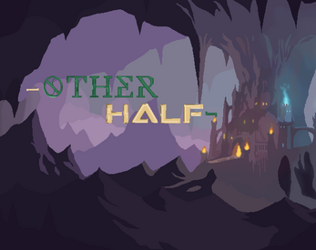
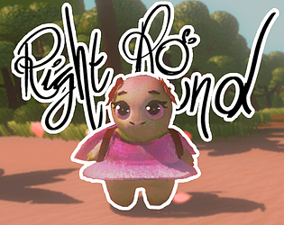
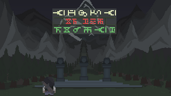
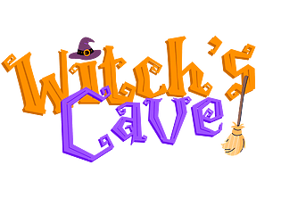
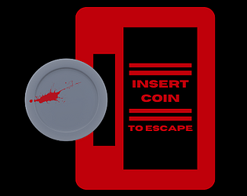
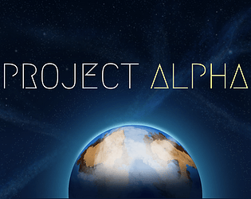
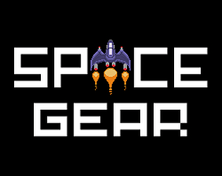

Meus Jogos
If These Walls Could Talk
Um thriller psicológico e investigativo em primeira pessoa ambientado em um apartamento. Responsável pelo Documento de Design Narrativo (NDD), loops principais de gameplay e blockouts de cenário. (Em Desenvolvimento)

Other Half
Trabalho de conclusão de semestre focado em design estruturado. Fui responsável pela escrita completa do GDD (Game Design Document) e co-desenvolvimento das mecânicas, integrando nossa tecnologia de iluminação técnica.

Right Round
Acompanhe Rina em uma ilha paradisíaca, coletando pétalas e runas enquanto enfrenta desafios para voltar para casa.

Sign of Forest
Jogo de ritmo/exploração desenvolvido em 48 horas para a Global Game Jam. Atuei como desenvolvedor generalista, trabalhando na prototipagem rápida de mecânicas, lógica e integração de assets.

Witch's Cave
Administre uma loja de bruxas em um jogo estilo Overcooked, entregando pedidos antes que o tempo acabe.

Insert Coin to Escape
Ajude um conhecido a testar fliperamas em meio a um vazamento de gás e um assassino em série. Recolha itens e escape com vida.

Project Alpha
Explore um mundo pós-humanidade como um robô de investigação em busca da origem de uma praga mortal.

Space Gear
Um shooter 2D simples e infinito. Faça o máximo de pontos desviando de obstáculos e sobrevivendo com 3 vidas.